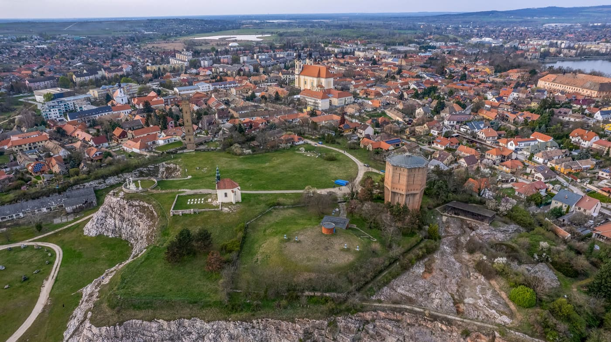

Tata, a „vizek városa”, a Dunántúli-dombság és a Kisalföld találkozásánál, csodálatos természeti környezetben terül el. A település szívét az Öreg-tó határozza meg, amely Magyarország legrégibb mesterséges halastava, és nemcsak a pihenni vágyók, de a vitorlázók és a horgászok paradicsoma is. A tó partján büszkén emelkedik a középkori Zsigmond-kori Tatai Vár, amely ma a Kuny Domokos Múzeumnak ad otthont. A várhoz csatlakozó, romantikus hangulatú Angolpark – műromjaival, kiskastélyával és a Fényes-patak forrásvidékével – tökéletes helyszín egy hangulatos sétához. A városon átfolyó Által-ér és a tatai tanösvények a természetkedvelők számára kínálnak felejthetetlen élményeket, míg a híres Tatai Vadlúd Sokadalom évről évre látogatók ezreit vonzza a tiszta vizű tavakhoz. Történelmi emlékei, barokk épületei, mint az Esterházy-kastély, valamint a modern sport- és kulturális élet harmonikus egysége teszik Tatát az ország egyik legelbűvölőbb és legbarátságosabb kisvárosává.